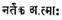
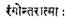
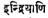
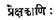

REVIEWS
Truth and Non-violence: A UNESCO Symposium on
Gandhi. Gandhi Peace Foundation.
The
UNESCO organised an international symposium during
the month of October 1969 in
The
discussions are very interesting, having symbolized the new spirit of enquiry
and analysis, which certainly enable the reader to have a fill of the several
aspects hitherto unexamined of Gandhi’s life and thought, from angles that bear
us the fresh light thrown upon them by the succeeding generations of thinkers.
The Editor of this volume of 380 pages, has done a splendid job in presenting the
substance of the entire discussions with due care in retainiong
the original flavour of the proceedings.
In
the course of the symposium many of the well-known principles of Gandhi’s
thought yield themselves to a critical survey with the added interest invested
in them by the manner of both the approach as well as the interpretation of
some of the participants. The introduction itself is an adequate compendium, giving
the reader in brief compass, the leading conclusions, which later get amplified in the succeeding pages. The headings under which
the discussions revolved during the proceedings have been gathered in the
introduction in order to render the reader’s encounter with the problems, less
onerous.
To
have an idea how the participants were really earnest and devoted to the task,
let us provide samples of the trend and interpretation of some of them. G. Ramachandran, who throughout the discussion, strikes us by
his profound understanding of the Mahatma’s thought, says: “In Gandhi’s mind
truth incarnates as love and love translates itself into action and incarnates
as non-violence. These are some of the postulates of Gandhi’s thinking. The humanism
of justice, freedom, peace and happiness, he said, can come only when truth
becomes love in action.” (p. 72)
Referring
to the relevancy of non-violence to our own times, Carlos Romulo,
Secretary of Foreign Affairs, Phillipines, says: “Indeed,
Gandhi’s message of truth and non-violence has gained fresh immediacy in the
thermo-nuclear age. It has become an indispensable condition, the sine qua
non of humanity’s survival.” (p. 51)
On
the question whether Gandhiji’s admission sometimes of his own defeat and
failure really justified his being adjudged accordingly, Ramachandran’s understanding
of such situations is worth remembering. He says: “You may lose a battle, but
you do not lose a war. Gandhi occasionally lost a battle as every General in
history has lost a battle. Some battle is always lost, but the war is not lost.
Gandhi’s war is not lost and must not be allowed to be lost.”
Again
on the moot point how far between ethics and politics there could be accord, Ravan Farhadi, Director General, Ministry of Foreign Affairs,
The
Nobel Laureate, Philip Noel Baker, assessing the writings of Gandhiji, says, “Yes,
indeed, if you judge him as a literary man, it was much too much. In literature
it is quality, not quantity, that matters. In politics
ceaseless energy is a merit, a path to success. It ruins politician’s personal
life, it destroys the happiness of his family, but it achieves the end he has
in view.” (p. 221) Summing up Gandhiji’s philosophy, A. G. Sheorey,
Managing Editor, Nagpur Times, says: “Gandhiji all
his life worked for the renaissance of the human spirit and for the spiritual
regeneration of man. If man redeemed himself, the world would automatically stand
redeemed, he believed.” (p. 260)
To
estimate the resulting benefits of a symposium like this one, we have the
attestation of Oliver Lacombe, who says: “I think that we have done here in
this symposium is to throw a stone into stagnant water. The ripples from this
are going to grow concentrically around the point of impact and by the thousand
and one means which we have available, help to bring Gandhi home to others to
convey his message and to bring about a clearer understanding of what
Satyagraha may mean.” (p. 310)
With
the references and appendices containing the working documents, with the notes
on the participants and the index, the publication is a worthy achievement.
–K.
CHANDRASEKARAN
Tagore–A Life: By
Running
into a second and enlarged edition, this biographical and critical estimate of
the life and works of Rabindranath Tagore, has proved its worth by the addition
of the last two chapters, containing a discerning assessment of the output of
the poet’s concluding ten years. ‘Last Harvest’ and ‘The Sunset’ are the
further chapters included here which have not found a place in the previous
edition. It has been felt in some quarters that the last ten years of the poet’s
life were crowded with writings which easily could be deemed as of a greater
and richer harvest than all his previous years of writing. We may not agree
readily with such an opinion from what the author here has been able to provide
us. It is abundantly clear also that the author too may not share such an
extreme view as has been advanced by some of the admirers of the poet. Indeed,
if any special value could be attached to Krishna Kripalani’s
attempt in this book to assess the poet and his works, it is his freedom from
any bias or prejudice while dealing with a poet, whose writings are immense and
varied, defying any strong assertion one way or the other. We have to
congratulate the author for having given us in a compact volume of 265 pages,
so much material without creating a feeling of any serious omission or
elimination of the important events as well as the significant landmarks of his
poetic outpourings.
During
the last decade of the poet’s life, there are certainly evidences of his
creative power showing no abatement but on the other hand even evincing a
tendency for voyaging forth on new seas and unfamiliar waters. His three or
four volumes of prose poems which deal with a variety of themes and moods, some
serious others quite playful and yet some merely narrative, even metaphysical,
but none lacking the quality and originality of his poetic soul. Some of the
illustrative verses in English translation bear out the fact how his mind and
power of thinking never waned till the last, but showed a sense of the richness
of poetic conceit that he alone was capable of.
In
recent years there have been many attempts made estimating the poet’s writings,
which have certainly added to the number the Tagoriana.
Still no other book in such a short compass as this one has been able to
satisfy the hunger of the genuine student of Tagore, with deep insights into
his many-faceted genius.
–K. CHANDRASEKHARAN
Freedom Movement in
The
present book by a very distinguished modern writer of
The
book compresses in the short span of 135 pages, an authentic and exhaustive
history of the Freedom Movement in
As
is to be expected, the history and growth of the National Movement, the war
years and after, the coming of Mahatma Gandhi, and the stirring events of the
1920’s occupy the central place of the book. Gandhiji’s finding of a weapon of
non-violence, which was greater than violence, and the superb generalship that
he exhibited during the Salt March and after, have been graphically described.
The effects of the Second World War on
This
book from a noted writer, is a very welcome addition to
the literature on the inspired drama of the freedom movement. A study of the
sketches of the great personalities that played a leading part in the struggle
should be instrumental, in effectively bringing about a sense of national
integration and awakening, among the impressionable young, for whom it is
intended.
–N. RAMESAN
Yoga Today: Edited by Dr. Jaya
Deva Yogendra and J.
Clement vaz. Macmillan Co. of
The
growing interest of the present day world in yoga is amply reflected in this
collection of papers at a recent Seminar Yoga in
Sri
Yogendra and Prof. Velenkar
underline the ancient character of the science of yoga which dates as far back
as the Vedas. How far the main concepts underlying the Ashtanga
Yoga of Patanjali can be integrated with benefit in a
modern scheme of education is discussed by a number of educationists. Dr. Raghavaiah’s note on yoga and illness is worth mentioning: “Some
diseases as sore eyes, rheumatic pains, headache, vomiting, etc., have been
treated with simple yoga methods, but I have found the ‘Ray of Soul’ treatment
to be the most effective. The soul is considered by Maharshis
as Atma Jyothi. Just as
light sends out rays, so does the soul. When I sit in yoga (savikalpa samadhi), the rays
of the soul will come out of my whole body as small projections through the
skin and will be seen by others with the naked eye. In that state I touch the
affected part of the body of the patient, passing into it the rays of my soul
for five or seven minutes. Any pain including high temperature,
can be reduced within fifteen minutes of this yoga treatment by the ‘Ray of the
Soul’.
–M. P. PANDIT
The Aryan Ecliptic
Cycle.
Price: Rs. 25. The Age of Zarathustra.
Price: Rs. 3. Are The Gathas
Pre-Vedic? Price: Rs. 7-50. The Mysteries of God in The
Universe. Price: Rs. 20. Sequel to The Mysteries of God in The Universe. Price: Rs. 10. By H. S. Spencer, Published by H. P. Vaswani,
The
first three books are products of extensive research by the learned author in
the pre-Vedic history of the Aryans. The writer comes to the conclusion that
their original home was in the
There
is no end to the mysteries of God which refuse to be explained by materialistic
science. The author marshals evidence from the Gathas,
Bible and Koran to press the belief in the three ancient religions in the
doctrines of Karma and rebirth. The drive, towards oneness in creation first at
the soul level and then on the physical in all great religions is brought into
focus.
–M. P. PANDIT
Archaeological History
of South
The
present book is a result of serious research and study on the history of
Rajasthan in general, and of Mewar or
Starting
from the prehistoric foundations of Rajasthan, the author reviews in a wide
sweep its protohistory, and traces its fortunes from
the dawn of history from the third century B. C. to the third century A. D.,
through the classical period from third century A.D. to seventh century A.D.,
and down to the advent of the Rajputs in the middle
ages. The last two chapters contain a study in depth about the conditions of Mewar, in the late middle ages and the advent of middle
ages in the same area.
As
regards the prehistory of the area, the author has done very valuable work in
identifying the physical features of the primitive people, who were responsible
for evolving the social, economic and political institutions of these rugged
areas. But the data that is available, being neither comprehensive, nor complete, a fuller history
would require fresh collections of data on these points in future.
In
dealing with the protohistory of Rajasthan, the
author has carefully reviewed the evidences collected by other researchers in
the field. He has also studied the art facts and the ceramic industry,
excavated elsewhere in
In
the section of the book dealing with the classical period, the early middle ages of Mewar,
the author has carefully drawn up on all the epigraphical
evidence available and published. Of particular interest would be the discussion in the Appendix of the Chirawa epigraph of the Guhilots
and one of their baronial families.
The
book is enriched by a few illustrations of the palaeoliths
from Chittor, Khor, Biawar, etc., the Harappan seals
from Kalibnagar and the ceramic ware from Darauli Hingwanis, etc.
The
book is a valuable addition to the early history of South
–N. RAMESAN
The Pess Council of
Press
Councils are voluntary institutions set up by the Press in freedom-loving
countries, as mirroring the conscience of the press.
They
have an important role to play as “guardian of the guardians of freedom” as
protector of the freedom of the press and as its mentor. In
Adjudication
of complaints against newspaper alleging deviation from standards of
journalistic ethics as well as encroachments on the freedom of the press by
Government or other bodies, for an integral part of the work of the Council. The
large num of such cases coming up before it shows the wide recognition its
important role in this connection. The report gives a brief account of the
nature of these complaints, the course of each inquiry and its outcome, and the
effect of the adjudication preventing recurrence of such deviations. The
findings of Council serve as useful guidelines for newspapers in regulating
their own conduct and help to build up a code of conduct for those engaged in
journalism.
Sometime
back the issue arose how far a loan or other form of direct aid by the Government to ailing newspapers was
proper vis a vis the generally accepted ideas of freedom of the
press. Council had no hesitation in giving its opinion that such direct aid was
“calculated to impair the freedom of the press, and thus in principle,
improper.” However, being alive to the need for providing institutional credit
to help financially handicapped but otherwise promising small and medium
newspapers to stand on their own feet,” the Council suggested setting up of a
Newspaper Finance Corporation as an autonomous body. The Council made it clear that
meticulous care should be taken to ensure its complete independence of the
Government and total freedom from the slightest vestige of governmental control
or influence and “even the breath of suspicion of such interference.” The
report gives details of the scheme drawn up by the Council for the creation of
such a corporation.
In
a multi-communal society like ours, newspapers are often faced with problems in
covering communal tensions and outbreaks. News reports or comments
unobjectionable in themselves normally might cease to be so in a situation of
tension. The line of caution to
be drawn in such situations is generally left to the good of individual
publications. Naturally, the performance of
papers varies, and such variation may not always be the result of design. It is here that
formulation of sound guidelines for reporting or commenting on these matters by
an authoritative body like the Press Council becomes helpful, as the press is
thus enabled to avoid what is “objectionable”. The report deals at length with
this subject and in addition to the guidelines formulated by the Councils, provides
information about the code adopted by the All India Newspaper Editors
Conference in 1962 and the conclusions reached at the Seminar held at
The
report also contains information about the procedure for laying complaints
before the Council, the questionnaire issued by it on “unfair competition and
restrictive practices in the newspaper industry” and other subjects of interest
to journalists and students of journalism.
–A. K. VENKATESAN
Gita Samiksha: Edited by E. R. Sri
Krishna Sarma, Professor of Samskrit, S.
This
slender volume is a treat for the intellectuals, students of the philosophy of
the Bhagavadgita in particular. Herein is a menu with
a variety of dishes in the form of fifteen papers containing the essence of the
commentaries of different Acharyas like Sri Sankara, Ramanuja, Madhwa, Nimbarka, Vallabha, Abhinava Gupta and Bhaskara and eminent thinkers and national leaders like Sri
Aurobindo, Mahatma Gandhi and Vinoba, all presented
to the Seminar on the Gita conducted by the Department of Sanskrit of the Sri
Venkateswara University in the year 1970. A study of this volume gives a
comparative knowledge of the views of the different commentators on the Gita.
Had all the speakers dwelt on common fundamental topics like God, Soul,
Universe, Salvation, means of Salvation, purport of the Gita, place of Jnana, Karma, Bhakti and ethics, pointing out the verses
and words on the interpretations of which each commentator differed from the
other, a clear understanding of the differences would have been made still easier. Quoting the relevant
original texts of Sankara and Yadava
Prakasa whose views were said to have been refuted by
Ramanuja (page 24) is necessary. These are but a few
suggestions. The book is an indispensable one for all students of the Gita.
–B. KUTUMBA RAO
Contribution of
This
book, packed with information, is a Doctorate Thesis, and is divided into four
main sections. The first section is devoted to poetics and poetry. The author
has herein clearly pointed out how the contribution of
The
second section is devoted to philosophy. The doctrines of Kashmir Saivism as propounded by Vasugupta
and Somananda are briefly summarized. An account of
Buddhist philosophers of
The
third section is devoted to history and topography of
In
appendix II the author advances some arguments to show that Kalidasa is a Kashmirian. In all there are seven useful appendices to the
work. We have for the first time all valuable information, particularly
regarding Sanskrit literature in
–B. KUTUMBA RAO
The Philosophy of A. N. Whitehead: The Concept
of Reality and Organism by L. V. Rajagopal, Prasaranga,
Philosophy,
though not an exact science, reflects the heights which a people attained in
spiritual realms, just as the level of civilisation is the true measure of a
nation’s rectitude and standard’s of behaviour.
Mr.
L. V. Rajagopal elaborately discusses Whitehead’s ‘Concept
of Reality and Organism’, in Chapters IV to VIII of his thesis submitted for a
Doctorate and endorses Whitehead’s worldview as against Realism, Pragmatism and
Absolutism.
The
Orient has its prodigies in this discipline and the Occident too has a host of
names to reckon with: Plato, Aristotle, Hume and Kant, Leibnitz,
and other stalwarts.
The
high points, a lay man could discern from the new Theory of Whitehead, are: (1)
Reality is a process, (2) Universe is an organism, (3) An occasion is a
concrescence of elements, (4) In every actuality the ‘origination urge’ leads
to production of novelties, (5) The Temporal World is God’s consequent Nature,
(6) Evolution progresses from simple to complex, (7) The Highest Expression of
Basal stuff is Home.
And
coming to theology Whitehead presents the creator as a shepherd tending his
flock and in rapport with his infinite multiplicities.
The Divinity is thereby brought down from his seventh Heaven and made intimate
to “Earth.”
The
book is well-documented with a Bibliography and explanatory appendices. And it
makes a fruitful study for those with a metaphysical bent ingrained in them.
–K. SUBBA RAO
Modernity and Contemporary Indian Literature: Published by the Indian
Institute of Advanced Study, Simla. Price: Rs. 50.
Life
is not static. It is kinetic. And this element of ‘flux’ is falsely read as ‘Modernity’.
It cannot be counted as a Norm or Value. It is a mode of thinking; a way of
expression. Progress is cyclic and not linear. Likewise, the rhythm of the
universe is evolution and involution. Modernity is therefore a cyclical recurrence
with a ‘period’ face and a ‘period’ outlook.
Its
attitude is aggressively destructive. It is impoverished of emotion and
imagination. Its fetish is matter-of-fact reason. The image of it is best seen
in works like Huxley’s Ape and Essence, Orwells’ 1984, and Windham
Lewis’ Revenge for love. It has a world to gain and a soul to lose.
All
the papers presented at the Seminar echo a common refrain: an anarchistic
newness in taste; an iconoclastic thinking, wild mode of communication, bizarre
imagery and a materialistic outlook. Its temperament and behaviour
are anti-establishment and anti-classical. Sartre is its Solomon.
Existentialism is the message offered by this Pontiff of modernity to an
irreligious, heterodox and science-soaked humanity.
Life
is robust living of ideas and ideals. And art imaginatively copies it. Such
qualities and values that outlast the accidents of time are to be considered
modern though they debouch out of a de-pedestalled
past. So Modernity and Tradition have no indrawn dividing line. Both merge and
emerge with shibboleths of old and new. The difference betwixt them is as
between Tweedledum and Tweedledee.
The
work is a compilation of a Seminar Proceedings and deserves appreciation of any
bibliophile.
–K. SUBBA RAO
As Above so Below: by Jossie
L. Hughes. Philosophical Library,
The
volume under review is the graphic account about the life of spirits in the
astral plane. She is a first rate spiritualist medium who through her training
has acquired the power of talking to spirits who are real and have astral
existence. These spirits through their compassion for the living humanity
deliver their messages to the medium when they call on them. This paranormal
phenomenon, i.e., clairaudience, i.e., the power to talk with dead men
according our author is a normal faculty and is one which may be developed by
anyone with the desire to do so. It is not the result of any mysterious drug or
L. S. D. To an unbelieving world the existence of spirits and the events of the
astral plane might look strange. But who reads this long interesting account of
two hundred pages will have to revise his opinion. The implications of
transmigration and reincarnation are dealt with great clarity and are highly
informing. The account is vivid and is put in simple style and is full of humour and tragic sentiments as of men in their life on
earth. As a genuine medium she correctly reports the words of the spirits and
does not project her views. The volume is a good specimen of mediums of
communication.
–DR. P. NAGARAJ A RAO
The Rural Elite in A Developing Society: by Prof. V. M. Sirsikar. Orient Longman Ltd. Price: Rs.
20.
Politics
has become the sap of the post-independence Indian society. It permeates every
sphere of life. Political apathy and inertia
characteristic of the people of the past are transformed into political
activism. In the contemporary context, politics has become the gateway to influence,
prestige, power and pelf. No wonder then increasing numbers includmg
students are draw into the political stream. The participation ranges all the
way from pass-time indulgence through occasional dabbling to whole time professionalised involvement. There is no place where discussion
or practice of politics is taboo. All this is not reprehensible in view of the
stress laid on political development of the masses. Yet scientific
investigations of political development have not matched its scale and
complexity. In this situation Prof. Sirsikar’s book is
a welcome help as it deals with political development at a vital level of the
multi-layer power structure of the nation-state. But this is a book not on the
dynamics of power as such but on political leaders entering the power pyramid
at a specific point. This book by Prof. Sirsikar is a
report of a survey of 537 leaders, office-bearers and members of Zilla Parishads and Panchayat Samithis in three rural
districts of
The publication would have
acquired greater value had only there been a critical review of existing
literature on rural leaders or leadership. A critical chapter of this kind would provide the
necessary framework for setting its findings. But, then, the author claims this
to be a novel experiment attempting to probe the hitherto unexplored areas of
political socialisation, recruitment,
value-orientations and psychological perceptions of the leaders. (p. 2) Well,
this may be a beginning in the much-wanting tradition of behavioural orientation in
Political Science research. The reviewer personally feels
that the book belongs more in the area of political psychology than political
sociology, because the unit of study was neither “interaction” nor “group” but
only the individual. The weight of
analysis was on rather subjective variables than objective processes and
relationships. For instance, it is a significant observation of the author that the adaptive
processes used by the leaders are a crucial factor in the transition of society
from traditional to modern forms of organisation
and yet this aspect of leadership
behaviour was not focussed
upon. Parts of ‘Introduction’
(ch. 1) and ‘Power linkages’ (ch.
7) dole out the traditional sociological fare for the reader.
Elsewhere
the materials presented appear more descriptive than explanatory. As for the
design of analysis, the inter-district comparisons have yielded little insight
into the problem.
Notwithstanding
these, the publication serves a useful purpose in providing informative
materials on leaders at a meso level unlike the macro
and micro level studies. The author’s own justification for the kind of work
undertaken is convincing and forceful.
–C. R. PRASAD RAO
Zakir Hussain:
Educationist and Teacher: Edited by V.
This
is a commemorative volume consisting of papers by eminent educationists,
brought out on the 72nd birthday of Dr. Zakir Hussain. The contributors are either colleagues or close associates
of Dr. Hussain. Shriman Narayan narrates how Zakir was inducted
as the Chairman of the Syllabus Committee of Basic Education. Dr. K. G. Saiyidain brings out the humane qualities of Dr. Hussain. His preparedness to polish the shoes of his pupils
who were unwilling to go to the Zamia with clean shoes is very touching. Prof. Mujib tells us how the Zamia Milia
came into existence as an alternative to the
Dr.
R. P. Singh, while analysing Hussain’s
views on universities, makes a distinction between Newman’s conception of a
university and Hussain’s. The latter holds that an
educated person does not merely do intellectual work. He rightly deplores the
present unsatisfactory work of our universities and strikes a note of warning
when he says, “There is dangerous little thinking in the universities all over
the country, about their work, about its nature and scope, its aims and
objectives, its methods and techniques.”
The
academic community is deeply indebted to Mr. V. S, Mathur
for editing this volume. He rendered a distinct service to all the teachers.
The publishers deserve congratulations for deciding to contribute the proceeds
of this book to the Teachers’ National Welfare Fund.
–D. VENKATA RAO
Never A Dull Moment: by Aries. Orient Longman
Ltd. 120 pages, Price: Rs. 7-50.
A
newspaper is supposed to cater to the various and varied tastes of its readers.
While to the greater part its aim is to present political news and views, it
also flashes sports events with almost equal prominence. A newspaper is, of
course, never complete and competitive without advertisements and commerce
columns.
Newspaper
readers keenly watch for their respective favourite subjects
day after day with a step-motherly concern for the other items. Good newspapers
also publish skits written in lighter vein Or, better,
conversely, papers that publish them are good. A few minutes spent on these
humorous write-ups can be a rewarding experience after a day’s busy schedule of
routine work. Called “middles,” these contributions often tend to act as an
antidote to seriousness. Besides, quite a few of them have literary value.
The
book under review is a collection of “middles” by Aires (Penname of Mrs. Nergis Dalal) which have appeared
in leading newspapers of
–K. V. SATYANARAYANA
The
volume under review is a new approach to the concept of man and his mission.
Our author is a trained scholar psychoanalyst who till his death in 1968 was
conducting a course on theory of high information level culture in San
Francisco State College. The author has ventured an almost Utopian view of the
role of sciences in the shaping of the future of man. He concentrates his
attention in the fascinating new science cybernetics. In the chapter of man he
essays forth a new definition of man–“Man is an organism programmed by Nature
to fill an information gap.” (7) The author seeks in a far-fetched manner the
affinity of this definition to Aristotle’s definition of man as a natural
being. The training for ‘information processing’ is dealt at great length.
The
goal of a culture is as filling out that part of a language ladder appropriate
to its information level. The mortal structure of man must be filled with new
orientations for maximising man’s knowledge and
filling in the ‘information gap’. Education should aim at training the
super-ego of man to disperse with religion, myth and ideology. The aim of the
author is to awaken the potentiality in man by giving ‘social information’. As a
preparatory training a thorough psychoanalysis man with a view to drive out his
myriad superstitions is prescribed. In short this book is a
rationalist attempt to understand man bring out his potentialities.
–DR. P. NAGARAJA RAO
Sri Madhua--His Life
and Teachings: by
Dr. P. Nagaraja Rao, M.A., D.Litt. Published by
Dharma Prakash Publications.
This
is a nice epitome of Sri Madhva’s philosophy, concise
but comprehensive and clear in its nature and presentation of the subject. The
book is divided mainly into four parts entitled: Hymns to Sri Madhvacharya, Life and teachings, Thus Spoke Sri Madhva, Texts, select pages from his works, and notes in English
explaining the texts. Hitopadesa of Vadi Raja is printed on the flap of the cover page. Photo
copies of Udipi Srikrishna and
Sri Madhvacharya enhance the value and sanctity of
the book. This book, a very good introduction to Sri Madhva’s
philosophy, is indispensable to all students of philosophy, and Madhvas in particular.
–D. KUTUMBA RAO
Gems from the Tantras
(Second Series): by
M. P. Pandit. Ganesh & Co. (
This
slender but priceless volume is a collection of gems of selected passages from Tantric texts that are practical guides to Sadhakas. These selections lay special emphasis on the consciousness
aspect of the Divine Reality and the significance of, that Chitsakti
for the spiritual evolution of man: These passages cover nearly seventy
subjects which are arranged in an alphabetical order. These are translated into
and commentated upon in English.
The advice “No criticism of other philosophies, deprecate none” is laudable for
its catholicity. A practical advice is imbedded in the following lines: “When
the Mantra and he who repeats the Mantra are separate there is no fulfilment.” There is Rhetoric beauty and message in the
quotations from Siva Sutras–  “The Dancer is the self;  The soul is the stage; The
senses are the spectators. This volume is a valuable and indispensable guide to
those that desire to know the essence of the Tantras,
but cannot wade through them. The value and the utility of the book is highly enhanced by the lucid commentary of Sri Pandit.
–B. KUTUMBA RAO
Indo-English Literature in the Nineteenth
Century by
John B. Alphonso Karkala:
The Literary Half-yearly,
The
book under review is a highly valuable and documented survey of prose, poetry
and fiction written by Indians during the nineteenth century. The author
critically examines the historic forces and events which helped the English
language to take deep roots in the Indian mind. He rightly observes that
Indians have shown considerable ability to adopt foreign languages using them
for creative expression. As English has acquired international usage and
application like Greek geometry and Arabic numbers, it can no longer be the
monopoly of anyone group of people in any one part of the world. So the Indians
found it very useful and convenient to employ English as a powerful medium of
expression and a helpful tool for absorbing the culture of
The
architect of modern
The
first Indian who wrote English verse was Kashi Prasad
Ghose whose Minstrel and
other poems was published in 1830. It showed lack of originality and
sincerity though some critics found the imitative work quite pleasing. Michael Madhusudan Dutt tried his hand at
English verse before he could hit upon the blank verse in Bengali which proved
to be an adequate medium of his creative vigour. He
wrote a long poem in English entitled The Captive Lady which narrated
the love episode of Prithviraj and Samyukta employing the octosyllabic
meter popularised by Scott Malabari
and Byron. It is surprising to note that excepting Behramji
Malabari none outside of
The
Dutt-Family Album was the first anthology of Indo-English poetry.
It contained poems composed by Govin Chunder and his two brothers. It is rightly considered a
significant landmark in the sphere of Indo-English poetry. Govin
Chunder’s gifted daughter, Toru Dutt,
distinguished herself by the adaptation of ballads and legends from Sanskrit
where she makes the ancient men and women come to life by the refreshing charm
of her narration. It goes to the credit of Romesh Chunder Dutt to have rendered
into English the great classics, Ramayana and Mahabharata. He will be
remembered as a soulful translator of the Indian epics.
The
chapters on Indo-English fiction, biography and criticism make this survey very
comprehensive.
Along
with useful biographical and historical material we find a good deal of
judicious evaluation and balanced assessment of the works of individual authors
set against the background of the period to which they belonged. This survey
enables us to place Indo-English literature in the proper historical
perspective. It is a book which every lover of Indo-English literature should not
only read but return again and again for the historical, biographical and
aesthetic material it so admirably incorporates.
–DR. C. N. SASTRY
TELUGU
Telugu Upanishattulu: by
M. Sitaramacharyulu Z. P. High School Errupalemt
Khammam Dt. Price: Rs. 10.
This
precious book which was awarded a prize by the Andhra Pradesh Sahitya Akademy,
is a free Telugu translation of Ten Upanishadic Texts
viz, Isa, Kena, Katha, Prasna,
Mundaka, Mandukya, Taittiriya, Aitareya, Svetasvatara and Narayanaopanishad.
Stories from Chandogya and Brlhadaranyaka
Upanishads are also added at the end. Metrical parts of the Upanishads are
translated into Vrittagandhi Telugu,
whereas the prose portions are translated into simple Telugu prose. Translation
of Upanishads which have been commentated upon by different Acharyas
according to their own interpretations is no doubt a very difficult and onerous
task. But this author did justice to his undertaking and executed it in a
pleasing manner. It is a running translation into lucid and graceful Telugu.
The
translation is based, as per the author’s own words, on the “Upanishadanka” of “Kalyani” a renowned and popular Hindi
monthly, and has a slight leaning to Visishtadvaita
Philosophy. The first hundred pages in the text are devoted to a spirited and inspiring
presentation of ancient Indian glory, culture and achievements in all aspects.
The author expresses on page 86 that Bhakti and religious rituals have no place
in Sri Sankara’s philosophy. But Sri Sankara provides a definite place for these two also. The true
connotation of the word “Mithya” is not understood as
it should be by the author. This book deserves a place in every Telugu home and
library.
–B. KUTUMBA RAO
Kavyalahari: A collection of lectures
delivered by Dr. D. Venkatavadhani. Yuvabharati, 5, Kingsway, Secunderabad-3 .
Price: Rs. 5.
A
team of young men who are very much devoted to literary activities made history–under
the banner of Yuvabharati–in the history of Telugu
literature by organising a series of lectures by Dr.
D. Venkatavadhani, Professor of Telugu,
The
book under review contains detailed criticism of five of the most important kavyas in Telugu literature–Sringaranaishamu, Manucharitramu,
Parijatapaharanamu, Vasucharitramu
and Vijayavilasamu. The author who is a
great critic, poet and Rasajna dwelt at length on the
merits of the kavyas with profuse illustrations from each
one of them and expounded in detail the poetic imagery and literary nuances of
the famous poets. The book is a treatise on the kavyas
and richly deserves a place in every library, personal as well as public. The Yuvabharati deserves congratulations on their unique
venture.
–BHAVARAJU